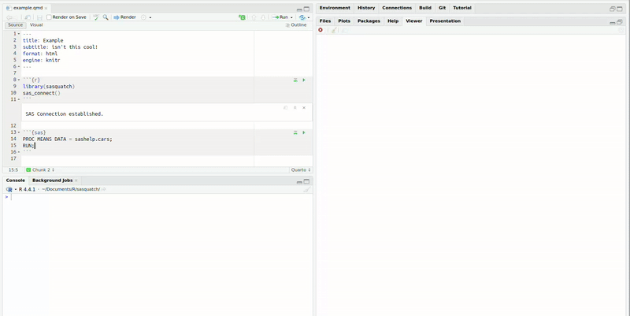

Use SAS, R, and Quarto Together
sasquatch allows you to combine the power of R, SAS, and quarto together to create reproducible multilingual reports. sasquatch can:
- Run SAS code blocks interactively
- Send data back and forth between SAS and R
- Conduct basic file management on a SAS client
- Render SAS output within quarto documents.
sasquatch relies on the SASPy Python package and the reticulate R package to interoperate with Python. Check out vignette("configuration") for guidance on SASPy configuration.
Installation
Package installation
You can install the development version of sasquatch like so:
# install.packages("pak")
pak::pkg_install("ryanzomorrodi/sasquatch")Python installation
Make sure Python is installed on your system. If Python has not been installed, you can install Python like so:
reticulate::install_python()or download the installer from the Python Software Foundation.
SASPy installation
To install the SASPy package and its dependencies within a Python virutal environment:
sasquatch::install_saspy()See vignette("configuration") for guidance on SASPy configuration.
Usage
Once you have setup SASPy and connected to the right python environment using reticulate (if necessary), you can create a quarto document like any other, call sas_connect(), and just get going!

Sending output to viewer
If you want to send the SAS output to the viewer, you can utilize the sas_run_selected() addin with a custom shortcut.

Converting tables
Pass tables between R and SAS with r_to_sas() and sas_to_r().
Rendering quarto documents
And of course, render beautiful quarto documents in the same style you would expect from SAS with the sas_engine().

Comparison with similar packages
-
sasrworks identically tosasquatchrelying on theSASPyPython package to interface with SAS, but does not include any interactive, file management, or quarto functionality.
- Like
sasrandsasquatch,configSASrelies on theSASPyPython package, but it primarily focuses on solely onknitrengine support. - The
configSASengine HTML output CSS styles interfere with the rest of the document and SAS code output is not contained within a code block.
-
SASmarkdowndoes not rely on theSASPyPython package and thus is fairly simple to set up; however, it does require a SAS executable to be installed on the same machine as R. - In contrast,
SASPy-reliant packages can interface with both local and remote SAS installations and can easily pass data between R and SAS without the need for intermediate files. -
SASmarkdownfeatures several different engines for various formats not currently implemented withinsasquatchlike latex pdfs or non-HTML5 HTML.
sasquatch may be beneficial to you if you…
- Rely on remote SAS client
- Desire interactive SAS functionality while developing
- Require remote SAS file management
- Would like to be able to easily send data back and forth between SAS and R
without the use of intermediate files
If you require pdf knitr support and have a local installation of SAS, I would recommend using SASmarkdownat this time.